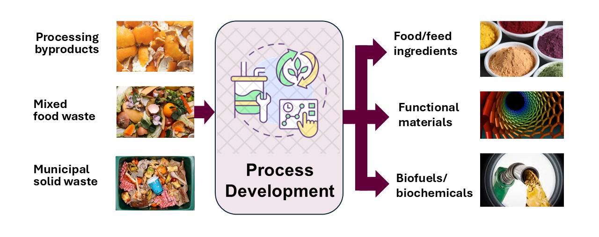
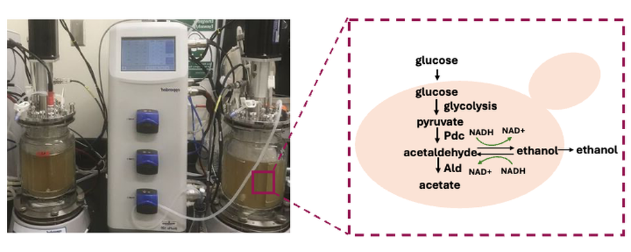
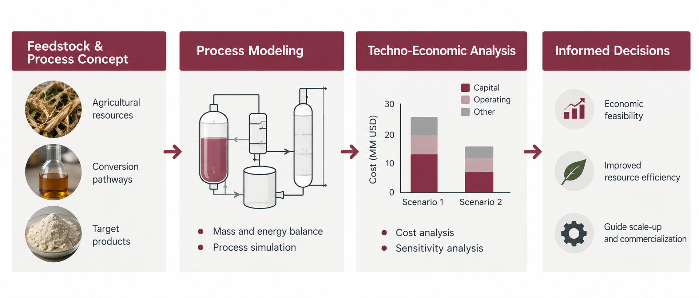

Our research develops scalable technologies for transforming food and agricultural resources into high-value products. We integrate processing science, product development, and systems analysis to understand not only whether a technology works, but also how it can be translated into practical and sustainable applications.
Our work is organized around three complementary research areas.
Research Area 1: Sustainable Food & Biomass Processing
Food and agricultural processing generates large quantities of underutilized side streams rich in proteins, dietary fibers, carbohydrates, and other valuable components. We develop processing strategies to recover, modify, and transform these resources into functional food ingredients and advanced materials.
Our research focuses on three areas: 1) producing plant-based proteins from agricultural feedstocks and processing byproducts; 2) producing and modifying bioactive dietary fibers; and 3) converting agricultural biomass into functional materials, including hard carbon, biochemicals, and adsorbents.

- Recovery and functionalization of proteins from brewer's spent grain and other food-processing byproducts
- Production and structural modification of dietary fibers to improve functionality and gut fermentability
- Conversion of agricultural biomass into functional carbon and other value-added materials
Research Area 2: Fermentation Technologies for Food Ingredients and Biochemicals
Fermentation offers a versatile platform for producing food ingredients, biochemicals, and other high-value products. Our research addresses key bottlenecks in fermentation—including process control, product titer, and downstream recovery—through integrated engineering approaches.
Our work focuses on three areas: 1) developing intelligent fermentation systems through real-time sensing, monitoring, and automation; 2) designing energy- and cost-efficient separation and purification strategies; and 3) upcycling food and agricultural side streams into valuable products using diverse microorganisms.

- Integrated production and recovery of 2,3-butanediol from low-cost food-derived feedstocks
- Sustainable production and recovery of polyhydroxyalkanoates (PHA) from waste-derived feedstocks
- Process integration and intensification for biological product manufacturing
Research Area 3: Process Systems & Techno-Economic Analysis
A promising technology can make an impact only if it can be translated beyond the laboratory. We use process modeling and techno-economic analysis to evaluate scale-up potential, identify major cost and resource drivers, and guide process development toward commercially viable solutions.
Our group applies these tools to emerging technologies for food ingredient, biochemical, and biomaterial production, integrating mass and energy balances with capital and operating cost analysis to identify opportunities for process improvement and commercialization.

- Techno-economic analysis of functional food ingredient production from agricultural and food-processing byproducts
- Economic and environmental assessment of renewable natural gas production from brewery wastewater